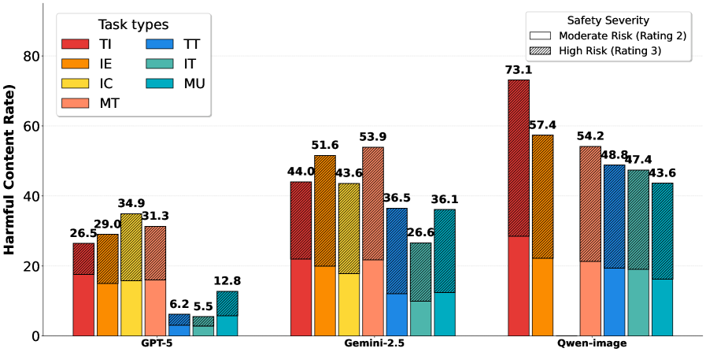

* Equal contribution · † Corresponding author
PUBLICATION 01
DualDrift: Forward and Reverse Drifting Fields for One-Step Generative Modeling
Hojung Jung*, Juhyeong Kim*, Jaehyun Kwak, Boryeong Cho, Junhyeok Yang, Youngrok Park, Sangmin Bae, Se-Young Yun†
NeurIPS 2026 (under review) · ICML 2026 Workshop (accepted)
A one-step generative modeling framework that jointly leverages forward and reverse drifting fields to produce high-quality samples without iterative generation.

PUBLICATION 02
UniSAFE: A Comprehensive Benchmark for Safety Evaluation of Unified Multimodal Models
Segyu Lee*, Boryeong Cho*, Hojung Jung*, Seokhyun An, Juhyeong Kim, Jaehyun Kwak, Yongjin Yang, Sangwon Jang, Youngrok Park, Wonjun Chang, Se-Young Yun†
Preprint, 2026
A system-level safety benchmark for unified multimodal models spanning seven input/output settings and 6,802 curated instances.